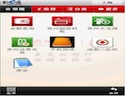
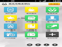
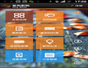

<nav id="filter"></nav>

<section id="container">
    <ul id="stage">
        
        <li data-tags="iOS Apps,Android Apps"><a href='{{ site.baseurl }}/apps/featured_apps/gyccb.html'></a></li>
        <li data-tags="Android Apps"><a href='{{ site.baseurl }}/apps/featured_apps/qianetong.html'></a></li>
        <li data-tags="iOS Apps,Android Apps,WP 8 Apps"><a href='{{ site.baseurl }}/apps/featured_apps/nscb.html'></a></li>
        <li data-tags="iOS Apps, Android Apps"><a href='{{ site.baseurl }}/apps/featured_apps/zijing.html'></a></li>
    </ul>
</section>
  
